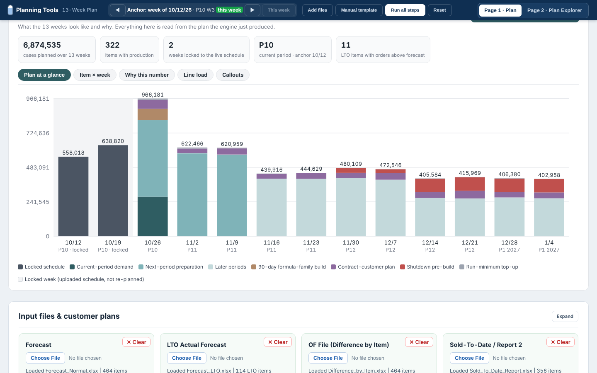
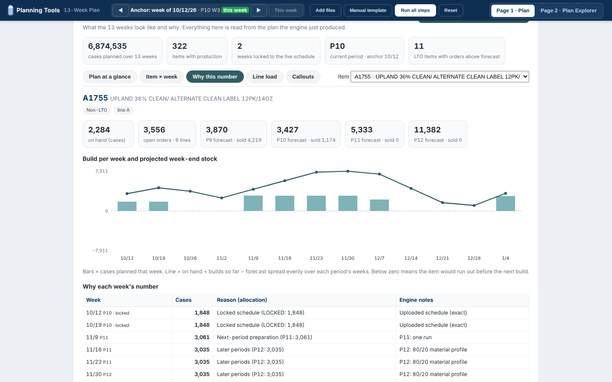

A calendar-driven 13-week production plan, with the reason behind every number. It reads the plant's daily exports and the two live schedule weeks, locks those weeks, plans the next eleven week by week, and shows why each item got each quantity.

Open the demo · it loads the sample plant and runs the plan on open (about 15 seconds). The upload area and settings are below the results.
The 13-week plan was rebuilt in Excel every week from the same ERP exports: forecast by period, sold-to-date, open orders, on hand, the schedules already in motion and three contract customers' own plans. It took most of a day, the rules lived in the planner's head (period deadlines, pickup lead time, formula-family builds, shutdown pre-builds, run minimums), and once the sheet was out nobody could say why a week's number was what it was.
The engine runs in five steps and then the results view reads its output:
| View | What it shows |
|---|---|
| Plan at a glance | Stacked weekly cases by reason: locked schedule, current-period demand, next-period preparation, later periods, 90-day formula-family builds, contract-customer plans, shutdown pre-builds, run-minimum top-ups. |
| Item × week | Every item with production, biggest first, by week. Grey columns are the locked schedule weeks. Click a row for the reason. |
| Why this number | For one item: on hand, open orders, forecast vs sold per period, the build per week, the projected week-end stock line, the allocation each week came from and the engine's own notes. |
| Line load | Cases per line per week against the plan's capacity settings, with shutdown and holiday weeks shaded. |
| Callouts | Orders above the LTO forecast (not built automatically), LTO seasons with unsold forecast, items with forecast gaps, open orders with no forecast, negative on hand, combo items. |
| Engine steps | The tool's own five-step log: inputs check, requirement by period, placement, adjustments, validate & export. Downloads the plan workbook and the handoff file. |

Inputs (xlsx) Engine (five steps) Outputs
────────────────────────────────── ─────────────────────────────────── ──────────────────────────────
Master code, Item line master ─┐ 1 Inputs check: anchor week, current Weekly plan: item × 13 weeks
Forecast normal + LTO (this + next yr) │ period, locked weeks, customer plans with source and allocations
Difference by item (OF), Sold-to-date │ 2 Requirement: per period, forecast or Results view (this page)
Product availability (open orders) ├─▶ OF minus sold minus on hand, 5-day ─▶ Plan workbook (ZIP) in the
On hand + PO, Equivalent on hand │ pickup rule for open orders plant's existing format
Bill of materials │ 3 Placement: locked weeks exact, demand Handoff file (small)
This week + next week schedules │ into open weeks before period deadline Callouts list
Three contract-customer plans │ 4 Adjustments: 90-day family builds, run
Shutdown / holiday settings ─┘ minimums, batch top-ups, pre-builds
5 Validate & export: hard failures, warnings
I built the weekly plan by hand before this existed and I run this tool every week now. I specified the calendar (periods of 4–5 weeks, deadlines, anchor week), every planning rule and its order, the treatment of the locked schedule weeks and the three contract customers, and the output format. I validated each release against the plan I would have built by hand and against what the plant actually produced.
Designed, specified and validated by me on live production data. Built with an AI coding assistant.
A####; lines are A–D; capacity settings are the demo's own.